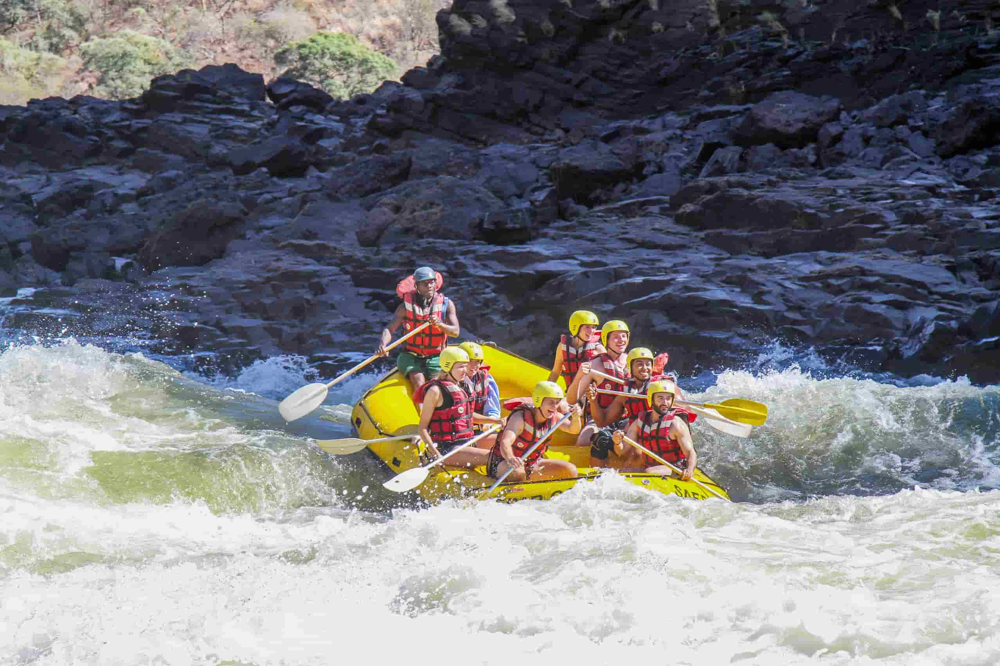
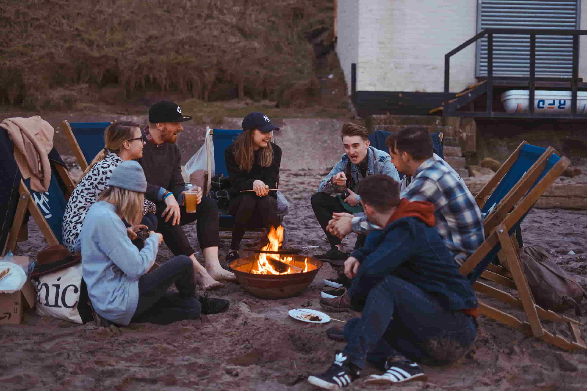
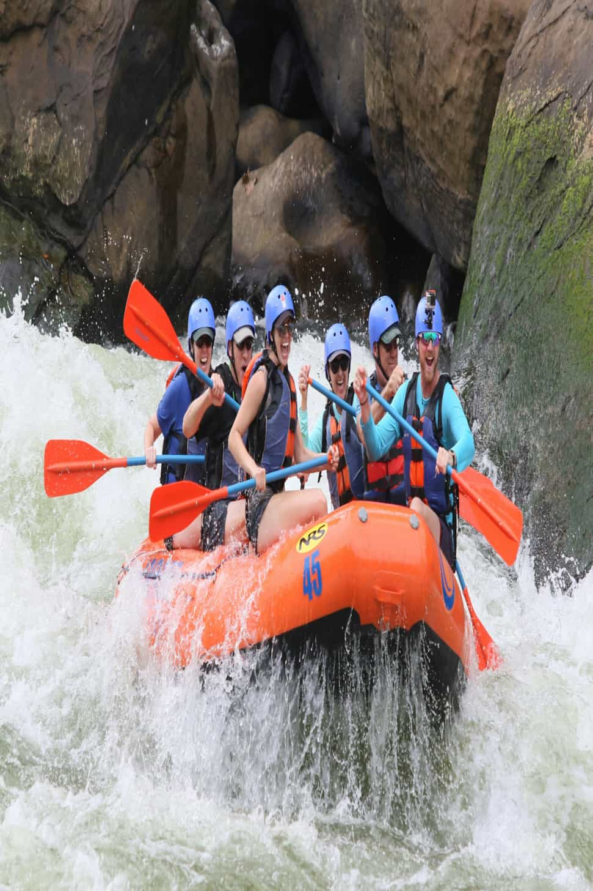
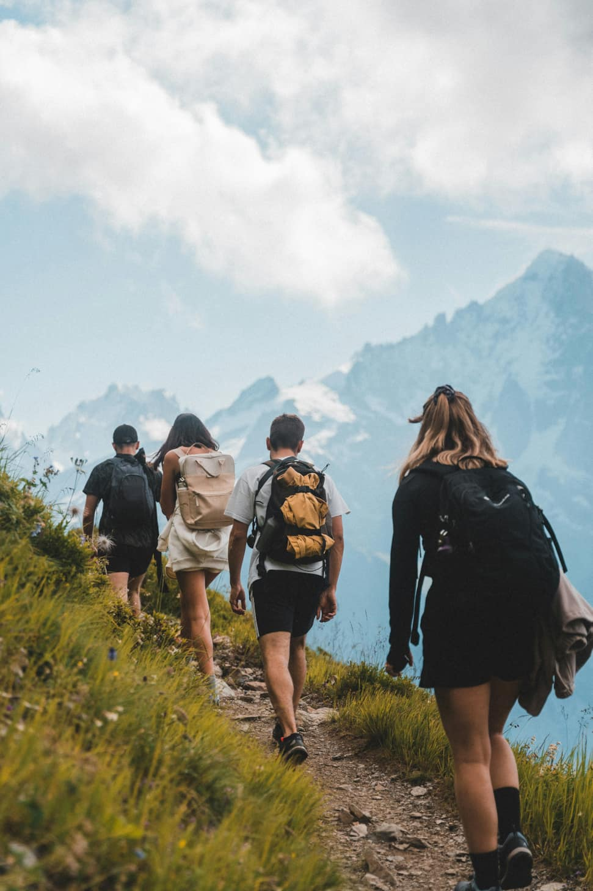

THE WHITE WATER RAFTING COMPANY
Do you want the
News Letter?
We Offer



Since 1988,
...The White Water Rafting Company has been navigating the wild, churning currents of the Pacific Northwest, born from little more than two beaten-up rubber rafts, a rusted Ford Econoline van, and an unyielding obsession with untamed water. It started with Marcus Vance and Sarah Lin, two former search-and-rescue river guides who realized that the commercial rafting trips of the late 1980s were becoming far too sanitized. Most outfits were busing tourists down calm, predictable stretches of river, handing out printed certificates, and calling it an adventure. Marcus and Sarah wanted to give people something real—the heart-in-your-throat adrenaline of technical Class IV and V rapids, paired with deep, immersive wilderness camping where the noise of modern life couldn't possibly follow. That first summer was a masterclass in grit. Operating out of a leaky wooden shed on the banks of the river, they spent their days scouting unforgiving river runs, mapping safe lines through treacherous boulder fields, and hauling heavy equipment by hand. Nights were spent sleeping under the stars next to the van, surviving on canned chili and repairing punctured pontoon rubber by the light of a headlamp. Their first clients were mostly brave locals and adventurous college students who paid fifty dollars cash for a day of bone-chilling white water and a campfire meal cooked in a heavy cast-iron skillet. Word spread quickly. The White Water Rafting Company built its reputation not on flashy marketing, but on unmatched river authority and an obsession with safety. By the mid-1990s, as extreme sports surged into popular culture, the company expanded its footprint. Marcus and Sarah hired a tight-knit crew of elite river guides—a ragtag family of hydrologists, seasoned wilderness medics, and lifelong river rats who lived for the roar of the canyon. They invested in self-bailing rafts, state-of-the-art rigging, and upgraded their primitive basecamp into a functional river lodge complete with gear drying rooms and a proper kitchen. Yet, despite the growth, the core philosophy never shifted. When corporate tourism agencies offered to buy out the company in the early 2000s to turn it into a high-volume resort operation, Sarah and Marcus turned them down flat. They refused to compromise on group sizes, maintaining small, highly personalized trip rosters that protected both the ecological integrity of the river corridors and the quality of the experience. Nearly four decades later, the river has carved new paths through the canyon, and the wooden shed has long been replaced by a modern eco-lodge powered entirely by solar and micro-hydro generation. Marcus and Sarah have passed the wooden oars to a new generation of lead guides—including their daughter, Maya, who grew up falling asleep to the sound of rapids. Today, The White Water Rafting Company stands as a legendary fixture in the white water community. The gear is sleeker and the safety technology is unmatched, but the spirit remains identical to that first chilly morning in 1988: push off from the bank, read the river, and respect the wild.
Check out the trips now!
Here